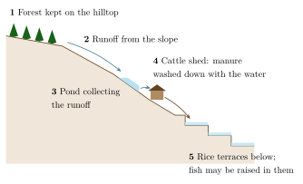

Chapter 4: Water Harvesting and Irrigation Systems¶
4.1 Introduction¶
India’s rainfall comes mostly in a few months of the monsoon, and varies greatly from year to year and place to place. For thousands of years, communities have built structures to catch, store and distribute water: tanks, ponds, check dams, wells, stepwells, channels and cisterns. Many were built by villages and maintained by village institutions; others were built by kings, merchants and religious foundations. This is the chapter of the volume in which Adivasi and village folk knowledge meet most closely. It begins with the systems of hill, forest and desert communities, many of them Adivasi, and then turns to the village systems of caste society, the kuhl, phaḍ, āhar–pain and tank, which belong to the folk knowledge discussed in Chapter 10. Throughout, it attends to the social knowledge that kept water systems working. The history of irrigation in Indian agriculture as a whole, including the great tank and canal systems of the plains, is treated in Volume 15, Kṛṣi and Jīva Vijñāna.
The Centre for Science and Environment’s report Dying Wisdom (1997) and Anupam Mishra’s Hindi classic Aaj Bhi Khare Hain Talab (1993) did much to draw public attention to traditional water harvesting (Agarwal and Narain 1997; Mishra 1993). Their argument, that India’s water policy had neglected small, decentralised systems in favour of large dams and tube wells, has been widely influential. This chapter shares their respect for traditional systems, but also notes their limitations: many were tied to unequal social orders, and none can by itself meet the water needs of a much larger and more urban population. Each system described below combines four kinds of knowledge: of where water flows and sinks in different rains; of earthwork, masonry, channels and sluices; of the relation between vegetation, soil and water; and of the rules by which users share water, organise repairs and settle disputes.
4.2 Johads of Rajasthan¶
The johaḍ is a crescent-shaped earthen embankment built across the slope of a seasonal watercourse to hold monsoon runoff. Water stands behind it for some months, recharging the groundwater that feeds wells downstream, and the bed can be cultivated as it dries. Johaḍs were once common in the Aravalli hills of eastern Rajasthan, but many had fallen into disrepair by the mid-twentieth century.
From 1985 the voluntary organisation Tarun Bharat Sangh, led by Rajendra Singh, worked with villages in Alwar district to rebuild old johaḍs and build new ones, using village labour and local knowledge of siting. By the organisation’s count, thousands of structures were built over the following years (Agarwal and Narain 1997). The organisation and several observers report that groundwater levels rose, that wells that had dried up held water again, and that seasonal rivers, among them the Arvari, flowed for longer; these reports come mainly from the organisation and its supporters, and independent hydrological measurements are few. The villages along the Arvari formed a river “parliament” (Arvarī Sansad) to make rules for the use of its water. Rajendra Singh received the Ramon Magsaysay Award in 2001 and the Stockholm Water Prize in 2015. The scale of the hydrological effect, and how far the experience can be repeated in other geological settings, is debated among researchers.
4.3 Mountain Water: Ladakh and Arunachal Pradesh¶
In Ladakh, a cold desert where most of the population belongs to Scheduled Tribes, agriculture depends almost entirely on meltwater from snow and glaciers. Villages divert streams through long channels (yura) to their fields and to small storage ponds (zing) that fill overnight and are released in the day, when the melt is strongest. Water is distributed among households by turns under the supervision of an elected water official (churpon), and the village assembly settles disputes.
Because the melt is often late in spring, when the fields most need water, Ladakhi engineers, notably Chewang Norphel, have developed “artificial glaciers” that store winter flow as ice in shaded valleys, and, since 2013, the conical “ice stupas” devised by Sonam Wangchuk, which freeze winter water into towers that melt slowly in spring. These are new inventions, but they build on the long experience of managing water in this landscape.
In Arunachal Pradesh, the Apatani of the Ziro valley divert hill streams through a network of channels into their terraced rice fields, managing the flow through the fields by bamboo pipes and earthen bunds, and raising fish in the flooded fields (Section 2.14). The channels are maintained by clan and village groups.
4.3.1 Springs of the Himalaya¶
In the middle Himalaya, most villages depend on springs. In Kumaon and Garhwal, springs are protected by small stone-lined tanks (naulā), often roofed and decorated, and by spouts (dhārā) from which water is drawn; many are associated with shrines and rituals, and village rules forbid polluting them. In recent decades many springs have dried or become seasonal, because of changes in land use in their recharge areas, road building and changing rainfall. Programmes of “springshed” management, begun in Sikkim in the late 2000s and taken up elsewhere in the Himalaya, combine hydrogeological mapping of recharge areas with the knowledge of villagers about where their springs come from, and with trenches, ponds and vegetation to restore recharge.
4.4 Bamboo Drip Irrigation of Meghalaya¶
In the Khasi and Jaintia hills of Meghalaya, farmers growing betel leaf and black pepper on steep slopes use split and hollow bamboo pipes to carry water from hill streams to their plantations. The water is led through a network of bamboo channels of decreasing size, supported on bamboo frames, and finally delivered drop by drop near the base of the plants. The system uses local materials, is built and maintained by the farmers themselves, and works on slopes where other forms of irrigation are difficult. It has attracted the attention of agricultural engineers because it shares the principle of modern drip irrigation, delivering small quantities of water to each plant, though it was developed quite independently (Agarwal and Narain 1997).
4.5 Zabo of Nagaland¶
The zabo system of the Chakhesang Naga, best known from Kikruma village in Phek district, combines forest, water harvesting, livestock and rice. The word is usually glossed as “impounding water”. Forest is protected on the hilltops; runoff from the slopes is collected in ponds dug on the hillside; cattle sheds placed near the ponds allow manure to be washed down with the water; and the water is led to rice terraces below, where fish may also be raised (Figure 4.1). The system joins forest protection, water harvesting and farming on slopes too steep for most other forms of irrigation (Agarwal and Narain 1997).

4.6 Water in the Desert: Ṭāṅkā, Kuṇḍ and Bāvaṛī¶
In the Thar desert, where rainfall is low and erratic and groundwater is often deep and saline, people collect rainwater in underground cisterns. The kuṇḍ or kuṇḍī is a circular pit, lined with lime plaster and covered with a dome, into which water runs from a prepared, sloping catchment; the ṭāṅkā is a similar cistern, attached to houses or forts. In sandy areas, kuīs or beris, narrow wells, tap the thin layer of moisture that collects above a layer of gypsum in the subsoil. Anupam Mishra’s writings on traditional water structures, including those of Rajasthan, describe the knowledge and the communities, among them specialist well-diggers and tank-builders, who made them (Mishra 1993).
Stepwells (bāvaṛī, vāv), built in western and northern India from the later first millennium CE, were mostly the works of royal and merchant patrons and are described in Volume 15; many smaller ones served villages and travellers.
In the Rann of Kutch, Maldhari herders dig shallow wells called virdā in depressions where rainwater collects; fresh water floats above the denser saline groundwater, and must be drawn carefully to avoid mixing.
4.6.1 Finding Water¶
Rural communities in many parts of India have specialists who claim to find underground water, using a forked stick or a coconut held in the palm (dowsing), or by reading surface signs such as particular plants, termite mounds, soil colour and moisture. The surface signs can be genuine indicators of shallow groundwater, and well-diggers’ experience of local geology is valuable. Controlled tests of dowsing, however, have not shown that it locates water better than chance, and hydrogeological survey is the reliable method where wells or bore wells are expensive to dig.
4.7 Village Irrigation in Valleys and Plains¶
Many of the best-known village irrigation systems of India belong to settled caste villages rather than to Adivasi communities, and their history is told in Volume 15, Kṛṣi and Jīva Vijñāna. They are summarised here because they show the same combination of hydrological skill and social institution. In the Kangra valley of Himachal Pradesh, gravity channels (kuhl) carry stream water along the contour to terraced fields; each is managed by the households it irrigates under a water master (kohli), who organises the annual repair of the intake and the rotation of water, and J. Mark Baker has shown how these institutions have adapted, and sometimes broken down, under off-farm employment and state intervention (Baker 2005). In the Tapi basin of north-western Maharashtra, diversion weirs (bandhārā) fed canals whose command was divided into crop blocks (phaḍ), each sown to a single crop in a season. In south Bihar, catchment basins (āhar) and diversion channels (pain) carried the rice crop through the end of the monsoon, until the abolition of zamīndārī left their maintenance without an organiser (Agarwal and Narain 1997). On the laterite hills of Kasaragod and Dakshina Kannada, farmers dig horizontal tunnels (suraṅga) into the hillside to draw out groundwater by gravity.
The tanks of South India (ēri in Tamil, kere in Kannada, cheruvu in Telugu), often linked in chains along a valley, were kept up by the annual collective labour of the cultivators (kuḍimarāmattu) and by village servants such as the nīrkaṭṭi, who opened the sluices and turned water from field to field. David Mosse’s study of the Ramnad region shows that these systems were never simply communal: rights to water and the duty of labour followed temple and royal authority and caste rank (Mosse 2003). Table 4.1 summarises the systems described in this chapter.
4.7.1 Tanks of Bundelkhand¶
In the rocky plateau of Bundelkhand in central India, the Chandela rulers (ninth to thirteenth centuries) and later the Bundela kings built large tanks by damming valleys between hills, many of which still survive, together with thousands of smaller village tanks built by local communities. Anupam Mishra described how specialised communities of tank-builders and the village institutions that cleaned and maintained the tanks were central to life in this dry region, and how their neglect in the twentieth century contributed to Bundelkhand’s chronic water crises (Mishra 1993).
| System | Region | Principle |
|---|---|---|
| Johaḍ | Eastern Rajasthan | Earthen embankment holding runoff; groundwater recharge |
| Kuhl | Himachal Pradesh | Gravity channel from stream to terraces (Baker 2005) |
| Phaḍ | North-western Maharashtra | River weir, canals and crop blocks |
| Ēri / kere | South India | Tank storing runoff for rice irrigation (Mosse 2003) |
| Āhar–pain | South Bihar | Catchment basins and diversion channels |
| Bamboo drip | Meghalaya | Bamboo pipes delivering water to plants |
| Zabo | Nagaland | Forest, ponds, livestock and rice terraces |
| Kuṇḍ, ṭāṅkā | Thar desert | Covered cisterns fed by prepared catchments |
| Bāvaṛī | Western and northern India | Stepwell |
| Virdā | Kutch | Shallow wells over saline groundwater |
| Suraṅga | Kasaragod, Dakshina Kannada | Horizontal tunnel tapping groundwater |
4.8 Farming below the Sea: Kuttanad¶
In Kuttanad, in central Kerala, farmers have since the nineteenth century reclaimed land from the backwaters and lagoons, building earth bunds and pumping out water to create rice fields that lie below sea level. The system depends on managing the balance of fresh and salt water through the seasons, on collective maintenance of the outer bunds, and on careful timing of sowing between floods. Much of the reclamation was organised by landlords and carried out by Dalit agricultural labourers, whose knowledge and labour made it possible. The Food and Agriculture Organization recognised the Kuttanad below-sea-level farming system as a Globally Important Agricultural Heritage System in 2013. Kuttanad was badly affected by the floods of 2018, a reminder of the vulnerability of such systems to extreme events.
4.9 Floods¶
On the floodplains of the Brahmaputra and the rivers of north Bihar, communities have long lived with floods rather than trying to prevent them: the stilt houses, flood-season rice and field fishing of the Mising are described in Section 2.17, and in north Bihar villagers welcomed the floods that brought silt and fertility, and built on raised ground. Embankments built since the 1950s have protected some areas but trapped water and silt in others, and have failed catastrophically during major floods. The debate between “flood control” and “living with floods” draws partly on this older knowledge.
4.10 Small and Large Systems Compared¶
Traditional and modern water systems are often contrasted as “small and sustainable” against “large and destructive”. The reality is more complex. Large dams and canals can store and move far more water, over far greater distances, and they made possible much of India’s agricultural growth after independence; they also displaced millions of people, many of them Adivasis (Section 12.6). Many small structures spread across a watershed spread the risk, since the failure of one affects only a small area, but they too fail in long droughts and silt up quickly without maintenance. Small structures can be built and repaired with local labour and controlled by their users, whereas large systems depend on state budgets and bureaucracies that have often failed to maintain them. Neither kind is fair by nature: large canals favoured those at the head of the system, and village tanks and wells were often closed to Dalits.
Most water specialists now argue for combining the two: protecting and restoring local storage and recharge, managing groundwater as a common resource, and using larger systems where they make sense, with the participation of those affected (Agarwal and Narain 1997; Mosse 2003).
4.11 Who Maintained the Water?¶
Every system described in this chapter depended on rules and institutions. Water was shared by turns, by hours or by field, usually with drinking water put first in dry years. Users gave labour for the annual cleaning and repair in proportion to the land they held or the water they received, and those who took water out of turn or failed to contribute were fined or excluded. Specialists, among them water masters, sluice-keepers and well-diggers, often came from particular castes.
Water work is also gendered. In most of rural India, women and girls fetch water for drinking and cooking, often walking long distances in the dry season; men more often control irrigation decisions and sit on the committees that manage tanks and channels. Improvements in village water supply have therefore often meant most to women, though they have rarely been consulted in planning them.
These institutions often reproduced the inequalities of village society. Dalits were frequently excluded from village wells and tanks, a practice against which B. R. Ambedkar led the Mahad satyāgraha at the Chavdar tank in 1927. Romantic accounts of “community” water systems that ignore caste exclusion give a misleading picture.
The legal framework also favoured individual extraction. Under Indian law, derived from the Indian Easements Act of 1882, the owner of land has in effect the right to draw the groundwater beneath it, without limit. When pumps became cheap, this rule allowed landowners with the means to drill deeper to capture water that had been a shared resource, while poorer farmers and those without land, including many Adivasi and Dalit households, lost access as shallow wells dried up. Reformers have proposed that groundwater be treated as a common resource managed by communities.
The decline of traditional systems in the twentieth century was due partly to the state’s takeover of irrigation, partly to the weakening of village institutions, and above all to the spread of tube wells and electric pumps, which allowed individual farmers to draw water independently of the community. The resulting depletion of groundwater across much of India has renewed interest in recharge structures such as johaḍs and tanks, and many have been built or repaired under watershed development programmes and the Mahatma Gandhi National Rural Employment Guarantee Act (2005). State programmes have also drawn on traditional names and ideas: Tamil Nadu revived the term kuḍimarāmattu for a scheme, launched in 2017, to restore tanks with the participation of their users, and Rajasthan’s water self-reliance campaign (from 2016) built and repaired thousands of village water structures.
Finally, the knowledge embodied in traditional systems is not only technical. It includes the conventions by which neighbours share a scarce resource, the rituals that mark the filling of a tank or the opening of a channel, the stories that explain why a spring must not be polluted, and the accumulated experience of which structures survive floods and which do not. Restoring the structures without this social knowledge has often failed; restoring the institutions, on fairer terms than before, has more often succeeded.
Key Points
-
India has a great variety of traditional water systems, from johaḍs and kuhls to tanks, cisterns and tunnels.
-
Every system depended on an institution for allocation and maintenance; many such institutions were also unequal and excluded Dalits.
-
Tube wells and state control contributed to the decline of collective systems; groundwater depletion has renewed interest in them.
-
Traditional systems complement but cannot replace larger-scale water management.